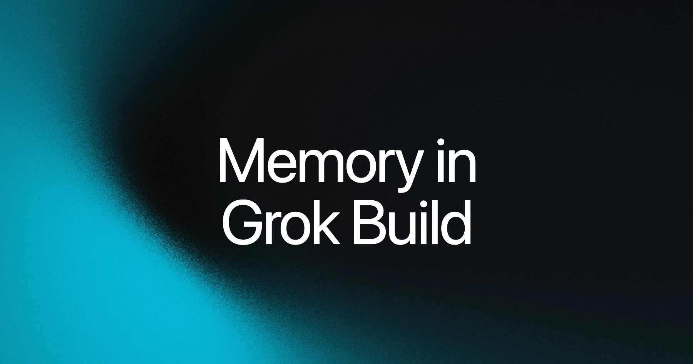
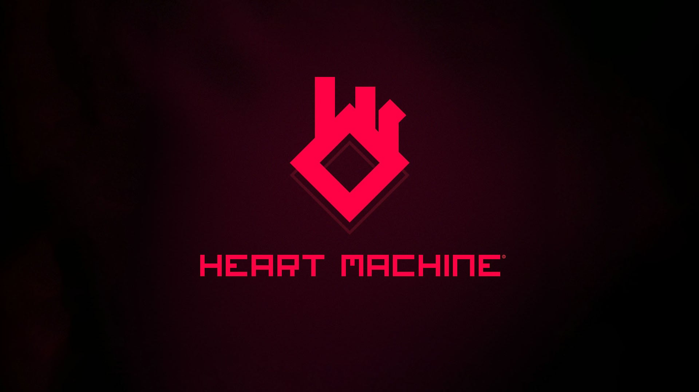
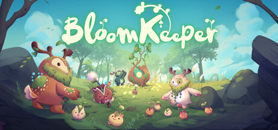
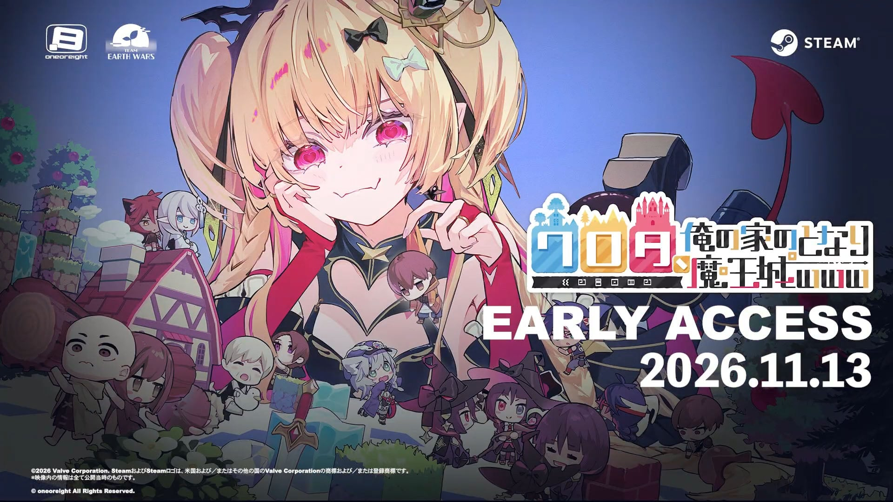

🔥🔥🔥
Unity 官方 Codex 插件正式上架：Unity Skills + CLI 工作流
Unity 在 9 月 16 日将面向 OpenAI Codex 的一方插件正式上架/公开：把 Unity 团队维护的开发 Skills 接入 Codex，并提供 Unity CLI 相关项目、Editor 与包管理工作流；这是引擎级 …
- 日期
- 2026-09-16
- 库
- 游戏开发 · 引擎工具链
- 状态
- 官方插件上架
今日主线是 火焰纹章：万缕千丝 与 空之轨迹 the 2nd 正式发售；行业侧 Lollipop Chainsaw 2 Back2Back 公布、卧龙2：凤火连天 定档 2027-03-04；🎬 Capcom Spotlight 已播（无世界首发/新锁，深潜见表）。AI：Claude Cowork 与 chat 合一 + SMB 43 工作流/27 集成（可推荐）+ Grok Build Memory。开发：Unity 官方 Codex 插件。今日无新旗舰；今日有新 MCP/Skill 推荐。二次元空库未出 Tab。
判定：双 AAA/JRPG 发售 + Spotlight 片单 + SMB 推荐扛主线。Unity Codex 进开发 Tab。不复述白发魔女 / Cloudbreaker / Salesforce in Claude / 蔚蓝档案。不发涉政。二次元空库未出 Tab。
最高 Attention 落在火焰纹章：万缕千丝 / 空之轨迹 the 2nd 发售、Lollipop Chainsaw 2 / 卧龙2 定档公布、Claude Cowork/SMB，以及 Unity Codex 插件（显示 🔥🔥🔥）。二次元空库未出 Tab。今日无新旗舰；今日有新 MCP/Skill 推荐。
判定：三库同出；展会片单已出（无世界首发/新锁）。二次元空库未出 Tab。
Unity 在 9 月 16 日将面向 OpenAI Codex 的一方插件正式上架/公开：把 Unity 团队维护的开发 Skills 接入 Codex，并提供 Unity CLI 相关项目、Editor 与包管理工作流；这是引擎级 …
Anthropic 宣布 Claude Cowork 与 chat 合并为同一 Claude：不必再选任务入口，长任务可在关电脑后续跑；同日推出 Claude Docs、Claude Slides（beta），Claude Design…
Anthropic 为 Claude for Small Business 插件加推 43 个工作流与 27 个新集成（Shopify / Salesforce / TikTok / Atlassian / Zoom / Xero / …
Intelligent Systems / 任天堂《火焰纹章：万缕千丝》于 2026-09-17 登陆 Nintendo Switch 2：系列正统新作全球发售窗开启。日区等本地午夜已可玩；美东午夜解锁约等于 9/17 12:00 CS…
日本 Falcom《空之轨迹 the 2nd》今日发售：Switch / Switch 2 / PS5 / Steam 全球同步窗；为《英雄传说 空之轨迹SC》完全重制续作，承接《空之轨迹 the 1st》。Steam 英文区 comi…
Dragami Games × Nada Holdings × JP Universe 公布系列新作《Lollipop Chainsaw 2 Back2Back》：PS5，2027；田畑端（原 FF15 监督）参与，原作剧本/人设班底回…
Team NINJA / 光荣特库摩将《卧龙》续作定档 2027-03-04：PS5 / Xbox Series / Switch 2 / PC（Steam / MS Store），同步进 Game Pass。Alpha Demo 现已…
xAI 为 Grok Build 上线跨会话 Memory：回合结束后台捕获约定、决策与项目事实，存为 markdown（项目域 + 全局偏好）；后续会话开工前自动读相关 topic。提供 /memory 浏览与 /dream 合并。非…
Capcom Spotlight｜TGS 2026 于 9/16 22:00 CST 已播（约 40 分钟，VOD 已出）。本场无世界首发新作、无新硬定档；主轴为《洛克人：Dual Override》深潜、《怪物猎人：荒野》大型扩展 A…
Hyper Light Drifter / Solar Ash / Possessor(s) / Hyper Light Breaker（EA）工作室 Heart Machine：发行方本周取消资助中的未公布项目后，「几乎全员」被裁。创…
Arbitrary Metric × Serenity Forge《罗马流沙 RE:Build》Steam / 主机正式发售：末世双世界（奢华度假村服务业 + 寄生虫研究站时间环）拼贴冒险。Steam 简中店名已核；昨截稿 coming…
法国 Montpellier Resonance Interactive《BloomKeeper》Steam 正式发售：实时战术引导 Pouics 复苏焦土，支持 1–4 人合作。Demo 曾获 Very Positive（约 88%/…
Phoenixx 公布「反向」僵尸独立作《The First Zombie》：玩家是人类第一只僵尸，目标不是杀丧尸而是感染东京街巷「交朋友」扩编尸潮。Switch / Steam，档期 TBA；日英语言。综艺制作人藤井健太郎监制。
Game Source Entertainment × SuperNiche × Clover Lab 公布校园时间环恐怖《廻咒》：Switch 2 / Switch / Steam，2027；支持简中。Steam 简中店名「廻咒」。昨…
今日无新旗舰。今日有新 MCP/Skill 推荐：Claude for Small Business（43 工作流 + 27 新集成，漏报补入）。另有 Claude Cowork 与 chat 合一（Docs/Slides/Design）与 Grok Build Memory——均非新模型，本库无旗舰对比表。
不把 Cowork/SMB/Memory 写成新旗舰；不复述 Salesforce in Claude / Gemini 3.8 Live。Unity Codex 记开发库，不进本库推荐。
Anthropic 宣布 Claude Cowork 与 chat 合并为同一 Claude：不必再选任务入口，长任务可在关电脑后续跑；同日推出 Claude Docs、Claude Slides（beta），Claude Design 也可在对话内使用。沿用既有 context / skills / connectors，非新旗舰、亦非新 MCP 包推荐。
关注度 · 🔥🔥🔥。来源：claude.com。
Anthropic 为 Claude for Small Business 插件加推 43 个工作流与 27 个新集成（Shopify / Salesforce / TikTok / Atlassian / Zoom / Xero / Gusto / Square / Stripe / Zapier 等），在 Cowork 内以 /smb-onboard、/monday-brief、/speed-to-lead 等命令运行；默认可审批后再发送/付款。昨扫已收 Salesforce in Claude，本 SMB 扩展包漏报，按补入核收入。

关注度 · 🔥🔥🔥。来源：claude.com · claude.com。
xAI 为 Grok Build 上线跨会话 Memory：回合结束后台捕获约定、决策与项目事实，存为 markdown（项目域 + 全局偏好）；后续会话开工前自动读相关 topic。提供 /memory 浏览与 /dream 合并。非新模型、非 MCP 安装包。

关注度 · 🔥🔥。来源：x.ai。
窗内主线：Unity 官方 Codex 插件正式上架——Unity Skills + CLI 工作流接入 Codex。属引擎级 AI 工具链，记本库编程/引擎轴，不当 AI 库 MCP/Skill 推荐条。Unreal / Godot / Frostbite 无窗内升格发版。
判定：单条达门槛出 Tab；fire 原始 4，页面显示钳制为 🔥🔥🔥。Unity 常规 patch 不另开。
Unity 在 9 月 16 日将面向 OpenAI Codex 的一方插件正式上架/公开：把 Unity 团队维护的开发 Skills 接入 Codex，并提供 Unity CLI 相关项目、Editor 与包管理工作流；这是引擎级 AI 开发入口，不是普通社区脚本。
关注度 · 🔥🔥🔥。来源：docs.unity.com · docs.unity.com · github.com · gamesinprogress.com。
行业主线：火焰纹章：万缕千丝 + 空之轨迹 the 2nd 发售；Lollipop Chainsaw 2 Back2Back 公布、卧龙2：凤火连天 定档；🎬 Capcom Spotlight 已播片单（无世界首发/新锁）。今日有独立游戏观察新增；展会片单已出。
判定：双发售+Spotlight+定档公布扛主线。不复述白发魔女 / Cloudbreaker / 金刚狼 / tinyBuild。TGS 后续舞台另窗收。
Capcom Spotlight｜TGS 2026 于 9/16 22:00 CST 已播（约 40 分钟，VOD 已出）。本场无世界首发新作、无新硬定档；主轴为《洛克人：Dual Override》深潜、《怪物猎人：荒野》大型扩展 Ascendance 焰妃龙回归、《龙之信条2：Dark Arisen》主预告与角色作成工具更新、SF6 / PRAGMATA / 生化危机 30 周年活动。片单细则见 exhibition_slate。

| 作品 | 类型 | 档期 / 平台 | 备注 |
|---|---|---|---|
| （空）本场无世界首发、无新硬定档 | |||
| 作品 | 备注 |
|---|---|
| 洛克人：Dual Override（Mega Man: Dual Override） | Proto Man 第二可操作角色深潜；Custom Chip / Override 系统讲解；档期仍 2027 春（9/9 Direct 已锁，本场不升新锁）；PS5/PS4/XSX/XO/Switch/Switch2/PC |
| 怪物猎人：荒野 扩展 Ascendance（Monster Hunter Wilds: Ascendance） | 焰妃龙 Teostra 回归；Boost Bracer / 换武器 QoL（亦回馈本体）；档期仍 2027；本体 Switch 2 仍 2026-12-04 |
| 龙之信条2：Dark Arisen（Dragon’s Dogma II: Dark Arisen） | Norgan 主预告 + 角色作成工具更新（含 Switch 2）；仍 2026-10-09；$49.99 捆绑 / $29.99 独立 DLC |
| Street Fighter 6 | Arjun 仍 10/13；C. Viper Outfit 4 同日；Tifa early 2027 / Bosch Spring 2027 重申；电影联动 New Challenger 图 |
| PRAGMATA | 免费 Mega Man Pack（洛克人/萝露外观+动作+BGM）本场后上线；首次本体打折 |
| Resident Evil 30th / Capcom Town | 东京展门票在售；USJ Requiem: The Dive 恐怖迷宫；欧美音乐会；Capcom Town 23 款复古至 11/1 |
关注度 · 🔥🔥。来源：gamespress.com · youtu.be · fullcleared.com · gematsu.com。
Intelligent Systems / 任天堂《火焰纹章：万缕千丝》于 2026-09-17 登陆 Nintendo Switch 2：系列正统新作全球发售窗开启。日区等本地午夜已可玩；美东午夜解锁约等于 9/17 12:00 CST（截稿部分区已 live）。

关注度 · 🔥🔥🔥。来源：nintendo.com · store.nintendo.com.hk · ign.com.cn。
日本 Falcom《空之轨迹 the 2nd》今日发售：Switch / Switch 2 / PS5 / Steam 全球同步窗；为《英雄传说 空之轨迹SC》完全重制续作，承接《空之轨迹 the 1st》。Steam 英文区 coming_soon=false（标 Sep 16）；简中店名已挂「空之轨迹 the 2nd」。

关注度 · 🔥🔥🔥。来源：news.denfaminicogamer.jp · store.steampowered.com · store.steampowered.com · falcom.co.jp。
Dragami Games × Nada Holdings × JP Universe 公布系列新作《Lollipop Chainsaw 2 Back2Back》：PS5，2027；田畑端（原 FF15 监督）参与，原作剧本/人设班底回归。TGS 2026 可玩；已补约 8 分钟实机。

关注度 · 🔥🔥🔥。来源：gematsu.com。
Team NINJA / 光荣特库摩将《卧龙》续作定档 2027-03-04：PS5 / Xbox Series / Switch 2 / PC（Steam / MS Store），同步进 Game Pass。Alpha Demo 现已开放至 9/30。Steam 简中名称栏含「卧龙2：凤火连天」。

关注度 · 🔥🔥🔥。来源：gematsu.com · store.steampowered.com。
Hyper Light Drifter / Solar Ash / Possessor(s) / Hyper Light Breaker（EA）工作室 Heart Machine：发行方本周取消资助中的未公布项目后，「几乎全员」被裁。创始人 Alx Preston 称尚不确定工作室如何存续。

关注度 · 🔥🔥。来源：gematsu.com。
Game Source Entertainment × SuperNiche × Clover Lab 公布校园时间环恐怖《廻咒》：Switch 2 / Switch / Steam，2027；支持简中。Steam 简中店名「廻咒」。昨 09:40 后入窗补核。
关注度 · 🔥🔥。来源：gematsu.com · store.steampowered.com。
Arbitrary Metric × Serenity Forge《罗马流沙 RE:Build》Steam / 主机正式发售：末世双世界（奢华度假村服务业 + 寄生虫研究站时间环）拼贴冒险。Steam 简中店名已核；昨截稿 coming_soon，本窗翻牌。
关注度 · 🔥🔥。来源：store.steampowered.com · gamespress.com · serenityforge.com。
法国 Montpellier Resonance Interactive《BloomKeeper》Steam 正式发售：实时战术引导 Pouics 复苏焦土，支持 1–4 人合作。Demo 曾获 Very Positive（约 88%/75 评）；无官方简中店名，留英文。

关注度 · 🔥🔥。来源：store.steampowered.com · store.steampowered.com · ladiesgamers.com。
Phoenixx 公布「反向」僵尸独立作《The First Zombie》：玩家是人类第一只僵尸，目标不是杀丧尸而是感染东京街巷「交朋友」扩编尸潮。Switch / Steam，档期 TBA；日英语言。综艺制作人藤井健太郎监制。
关注度 · 🔥🔥。来源：gematsu.com · store.steampowered.com。
One or EIGHT / Team EARTH WARS 将村庄建造动作 RPG《Warota: I Live Next to The Demon King’s Castle LOL》Steam EA 定档 2026-11-13；完整版 2027 登陆 PS5 / Switch 2 / PC。无官方简中店名，留英文。

关注度 · 🔥。来源：gematsu.com。